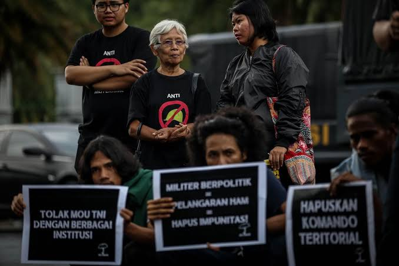
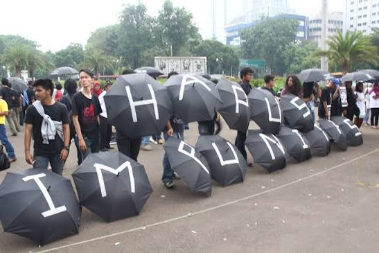
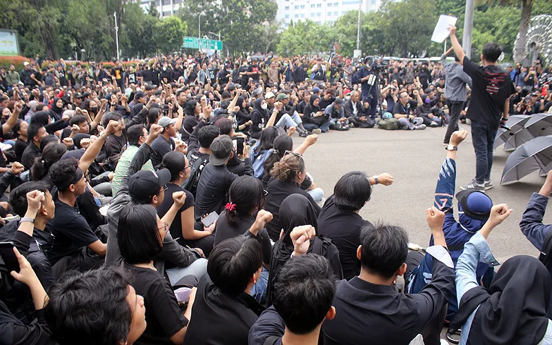
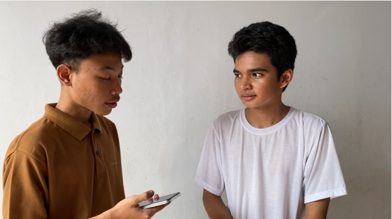
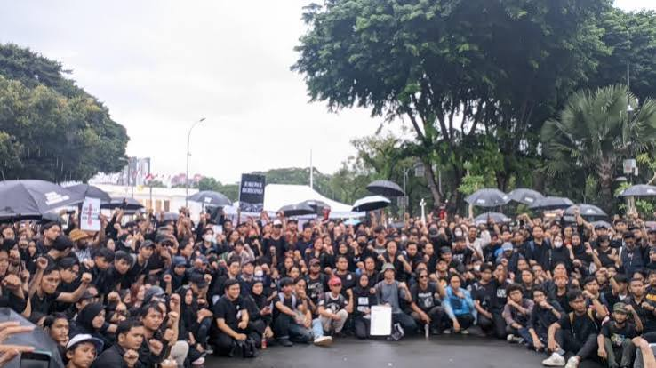

Setiap Kamis, sekelompok masyarakat mengenakan pakaian hitam dan membawa payung hitam di kawasan sekitar Istana Merdeka, Jakarta. Mereka mengikuti Aksi Kamisan, sebuah aksi penyampaian aspirasi yang telah berlangsung secara rutin sejak 18 Januari 2007 untuk menyuarakan persoalan pelanggaran hak asasi manusia (HAM) masa lalu.

Aksi Kamisan berkaitan dengan Jaringan Solidaritas Korban untuk Keadilan (JSKK) dan melibatkan keluarga korban, aktivis, mahasiswa, serta masyarakat sipil. Dalam pelaksanaannya, peserta biasanya melakukan aksi diam, membawa poster atau foto korban, serta menyampaikan tuntutan mengenai penyelesaian kasus-kasus pelanggaran HAM.
Bentuk aksi yang sederhana menjadi salah satu ciri khas gerakan ini. Peserta berdiri dengan pakaian dan payung berwarna hitam. Warna hitam dan payung kemudian menjadi simbol yang melekat pada Aksi Kamisan, berkaitan dengan duka, keteguhan, serta tuntutan untuk mengingat dan menyelesaikan persoalan yang dibawa oleh keluarga korban.

SIMBOL
Payung hitam menjadi salah satu simbol yang paling melekat pada Aksi Kamisan. Simbol tersebut hadir bersama pakaian hitam yang dikenakan peserta dalam menyampaikan aspirasi.
PELAKSANAAN KE-
AKSI KAMISAN
24 September 2026
Hampir dua dekade aksi penyampaian aspirasi ini terus berlangsung secara rutin setiap Kamis.
Museum Rekor-Dunia Indonesia (MURI) memberikan penghargaan kepada Aksi Kamisan pada 2017 setelah aksi tersebut berlangsung selama sepuluh tahun. Penghargaan tersebut mencatatnya sebagai aksi penyampaian aspirasi yang dilakukan secara rutin setiap Kamis dalam jangka waktu terlama.
Konsistensi tersebut terus berlanjut. Pada 24 September 2026, Aksi Kamisan di Jakarta telah mencapai pelaksanaan ke-926. Pada momentum tersebut, tuntutan mengenai penyelesaian sejumlah persoalan HAM masa lalu kembali disuarakan.
Angka tersebut menunjukkan bahwa Aksi Kamisan bukan sekadar aksi yang berlangsung sesekali, melainkan kegiatan yang dipertahankan secara rutin selama hampir dua dekade.
JEJAK PERISTIWA
Kasus yang Terus Diingat
Peristiwa 1965–1966
Salah satu peristiwa sejarah yang menjadi bagian dari pembahasan mengenai pelanggaran HAM masa lalu.
Penembakan Misterius
Peristiwa yang kemudian dikenal sebagai Penembakan Misterius atau Petrus.
Penghilangan Orang Secara Paksa
Kasus penghilangan sejumlah orang pada periode menjelang dan sekitar perubahan politik 1998.
Kerusuhan Mei
Peristiwa kekerasan dan kerusuhan yang terjadi pada Mei 1998.
Trisakti & Semanggi I–II
Rangkaian peristiwa yang berkaitan dengan demonstrasi mahasiswa dan korban dalam periode 1998–1999.
KEBIJAKAN PEMERINTAH
Peristiwa Pelanggaran HAM Berat
Diakui pemerintah pada 2023.
Pada 11 Januari 2023, pemerintah menyatakan mengakui terjadinya pelanggaran HAM yang berat dalam 12 peristiwa.
Pemerintah juga menyatakan akan melakukan pemulihan hak korban melalui mekanisme non-yudisial tanpa mengesampingkan kemungkinan penyelesaian melalui jalur yudisial.
MEKANISME PENYELESAIAN
Dua Jalur yang Berbeda
Non-Yudisial
Dapat mencakup pemulihan hak korban melalui mekanisme di luar proses pengadilan.
Yudisial
Berkaitan dengan proses hukum terhadap dugaan pelanggaran HAM berat melalui mekanisme peradilan.
Komnas HAM juga mencatat adanya persoalan dalam proses penyelesaian sejumlah kasus. Dalam pembahasan mengenai Peristiwa Trisakti, Semanggi I, dan Semanggi II, misalnya, Komnas HAM pernah mencatat adanya pengembalian berkas antara Komnas HAM dan Kejaksaan Agung terkait proses penyelesaian kasus tersebut.
SURVEI KOMNAS HAM • 2019
Bagaimana Publik Melihat Penyelesaian Kasus?
1.200 responden di 34 provinsi.
Sumber: Survei Komnas HAM, 2019.

GENERASI MUDA
Dari Keluarga Korban ke Generasi Muda
Dalam perkembangannya, Aksi Kamisan tidak hanya diikuti oleh keluarga korban. Mahasiswa dan masyarakat dari berbagai kelompok juga terlibat dalam kegiatan tersebut.
Komnas HAM sendiri menyebut mahasiswa sebagai salah satu kelompok yang memiliki peran penting dalam mendorong penegakan HAM dan meningkatkan kesadaran mengenai persoalan HAM.
PERSPEKTIF PELAJAR
Suara Generasi Muda
Bagaimana pelajar yang tidak mengalami langsung berbagai peristiwa tersebut memandang Aksi Kamisan?

Sejumlah peristiwa yang menjadi perhatian dalam Aksi Kamisan terjadi sebelum generasi kita lahir. Sebagai seorang pelajar, apa yang membuat Anda peduli terhadap persoalan tersebut?
"Menurut saya, sebagai generasi muda kita memiliki peran untuk mempelajari dan menjaga ingatan tentang berbagai peristiwa tersebut. Dengan begitu, persoalan mengenai pertanggungjawaban atas pelanggaran HAM masa lalu tidak mudah dilupakan"
Berarti, aksi ini juga menjadi bentuk solidaritas masyarakat untuk mendorong penyelesaian kasus-kasus tersebut?
"Benar sekali. Harapannya, pemerintah terus mendorong penyelesaian kasus-kasus tersebut, termasuk melalui mekanisme yudisial sehingga keluarga korban memperoleh kepastian dan keadilan"

MELAWAN LUPA
Ingatan yang Terus Dihidupkan
Wawancara tersebut menunjukkan bahwa pembahasan mengenai Aksi Kamisan tidak hanya berkaitan dengan generasi yang mengalami langsung berbagai peristiwa masa lalu.
Bagi generasi muda, persoalan tersebut juga berkaitan dengan bagaimana sejarah dipelajari, bagaimana korban diingat, serta bagaimana masyarakat memahami proses penyelesaian kasus pelanggaran HAM.
Aksi Kamisan pada akhirnya menjadi salah satu bentuk penyampaian aspirasi masyarakat mengenai penyelesaian persoalan HAM masa lalu.
Hampir dua dekade setelah pertama kali digelar, aksi tersebut masih dilakukan secara rutin dan terus menjadi ruang bagi keluarga korban serta masyarakat sipil untuk menyampaikan tuntutan mengenai keadilan, pemulihan, dan pertanggungjawaban.